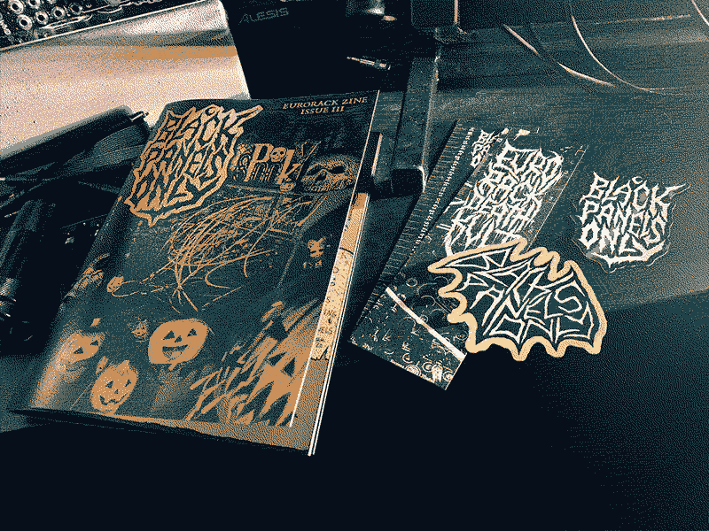
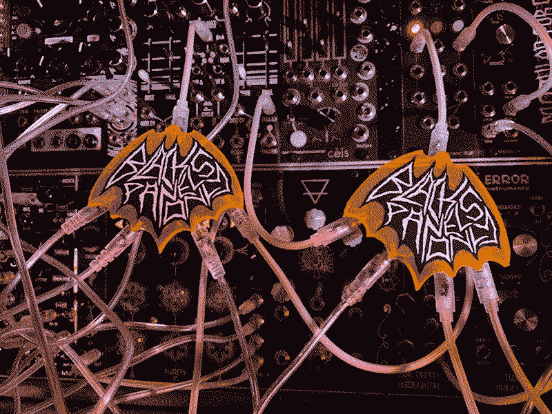
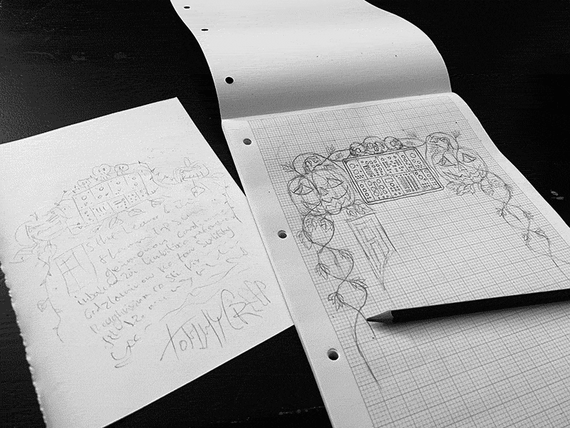
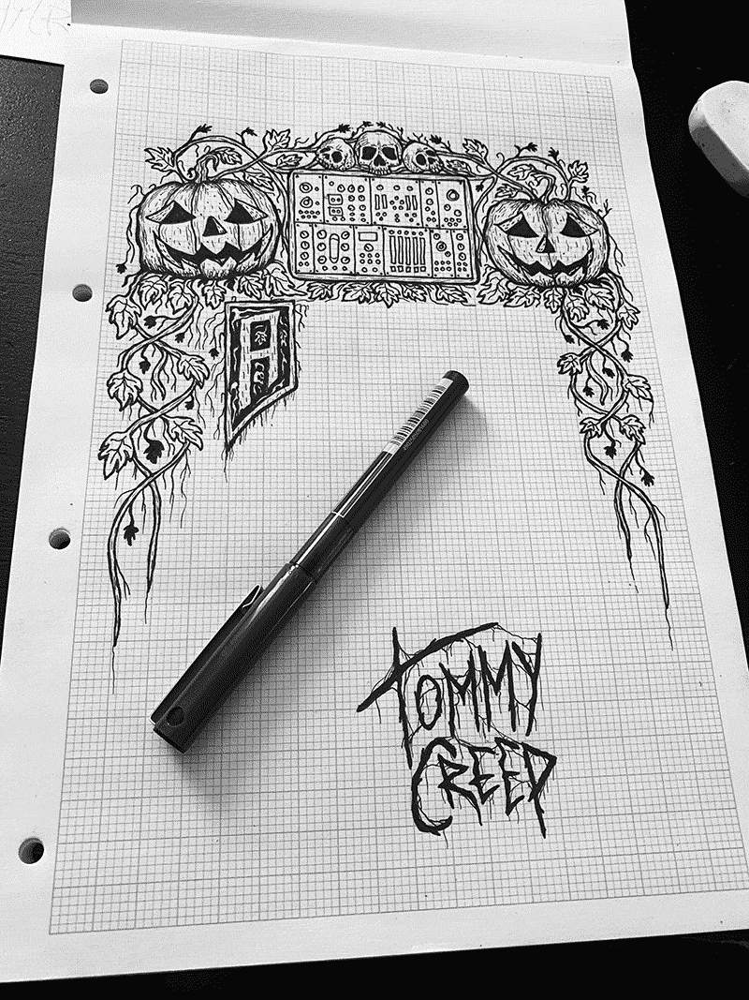

Issue III

As a long-time horrorpunk, doing a Halloween-themed issue was a no-brainer and it was really fun to have a theme to guide the style and content of the issue. I had to find an excuse to include 2HP’s original Halloween-limited edition Cat module from 2018, so I dropped them a couple of questions; I was also excited to get a response from Andor Polgar who’d made a video encouraging his cat to trigger a dark ambient patch; this double-page spooky-cat-spread was rounded off nicely with a pic of RBMK’s black cat (aptly named Pumpkin) walking across his modular.
Paul Bergel AKA d’Composer does modular live scoring for the Phantom Creep Theatre in Coney Island so a write-up about that was a perfect inclusion. Rounding off the theme nicely was a page on Joris Wegner’s Ghostbox module that scans through radio frequencies to capture EVPs- I can’t remember how I came across Joris’ module but I’d been watching a lot of Ghost Adventures at the time so was blown away by the idea. It was awesome to feature Viviankrist as I’d been a fan of her blackened-crust band Gallhammer since way before I even knew about modular so it was a nice link between the modular world and the black metal inspiration behind the zine.
For the cover photo, it was peak lockdown so I set up a scene in my living room with a load of Halloween decorations (which tend to be out all year round anyway). I lit the scene from underneath and in the end was pretty happy with the results- I particularly like the way the spooky sign casts a shadow on the cobweb netting in the background.
For this issue I decided to break from my colour palette rule of only having black, white and one other colour, this time having both orange and brown. I thought it would open up some creative possibilities having an extra colour to work with and might make the Halloween issue feel a bit more special. For the cover I used a gradient map adjustment layer to colour the image in my chosen colours.

As freebies with the first print run of this issue, I included 2 stickers and a bookmark that doubled as an HP ruler. I’ve found the HP ruler quite useful myself for measuring gaps but I did notice recently that it’s a bit off when you get to the higher numbers- precise measurements aren’t really my strong-suit which is probably why I haven’t attempted making a proper blank panel (yet).
I also had the idea of making a bat-shaped “flying” multiple- inspired by the ninja-start mults and Belkin headphone adapter-style ones. I knew that Zap! Creatives made nice laser-cut acrylic keyrings so my idea was to make bat-shaped ones, then hot-glue jacks to them and just solder wires between them to make a multiple. It did work but it took me ages to make even one just for myself (due to my poor soldering skills and dodgy soldering iron), so I just sold them as kits. They do look really cool when you use them because it literally looks like the bat is flying when it’s connected up. There’s probably a better way of doing it as the jacks keep coming unglued on mine. A bat-shaped PCB would be ideal- Mazzatron have really nice floating mults on PCBs- but something like this is a bit beyond my knowledge at the moment!
Illustrated border for the Page 5 editorial:


Released 2nd October 2020.
Features:
- Zlob Modular
- Viviankrist
- Animal Factory Amps
- Maneco Labs
- From the Mouth Ov Belial
- 2hp
- Modular Spookshow by d’Composer
- Witches of the Pumpkin Patch art by @poeticasfolk
- Modular Sketch by @patch_point
- Ghosthunting with Joris Wegner
- Gerda the Dark Ambient cat
- My Rack - Summa Riot
- My Rack - Dan Kibke